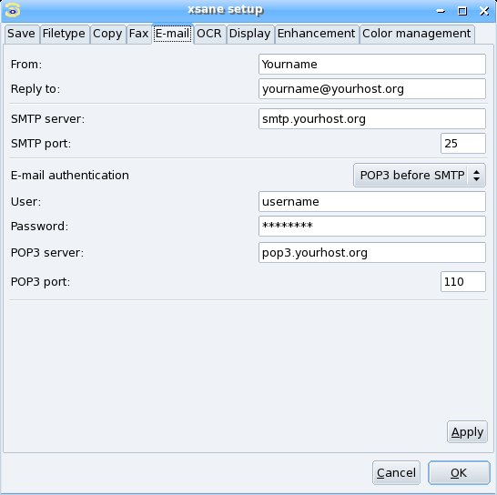

Index
XSane mode:

Scan options
Medium selection
Color management
Color correction:
Standard options window
Advanced options window
Preview:
Batch scan:
Setup:
|
You open the setup window via the menu preferences/setup in the
main window of xsane.

From:
Enter your email address.
Reply to:
Enter the email address to which the receiver shall answer.
If this is the same as the from address enter the same
address again.
SMTP server:
This is the address of the smtp server.
SMPT port:
Here you have to enter the port number on which the smtp server
expects smtp connections. The standard port number is 25.
E-mail authentication:
Since some years all SMTP servers expect authentication before accepting
any mail. There are different ways of authentication. Select the one your
ISP supports.
User:
Enter your username for the email authentication.
Password:
Enter the password for the email authentication.
Pay attention, this can
be a security hole. The user and password is stored in the
xsane.rc file in ~/.sane/xsane/xsane.rc. The password is
not stored in plain text but it is simple to reconstruct
the password from the entry in xsane.rc. If you enter
your pop3 password here make sure no one gets access
to your xsane.rc file.
POP3 server:
This is the address of the pop3 server when you selected POP3 before SMTP.
POP3 port:
Here you have to enter the port number on which the pop3 server
expects pop3 connections. The standard port number is 110.
|